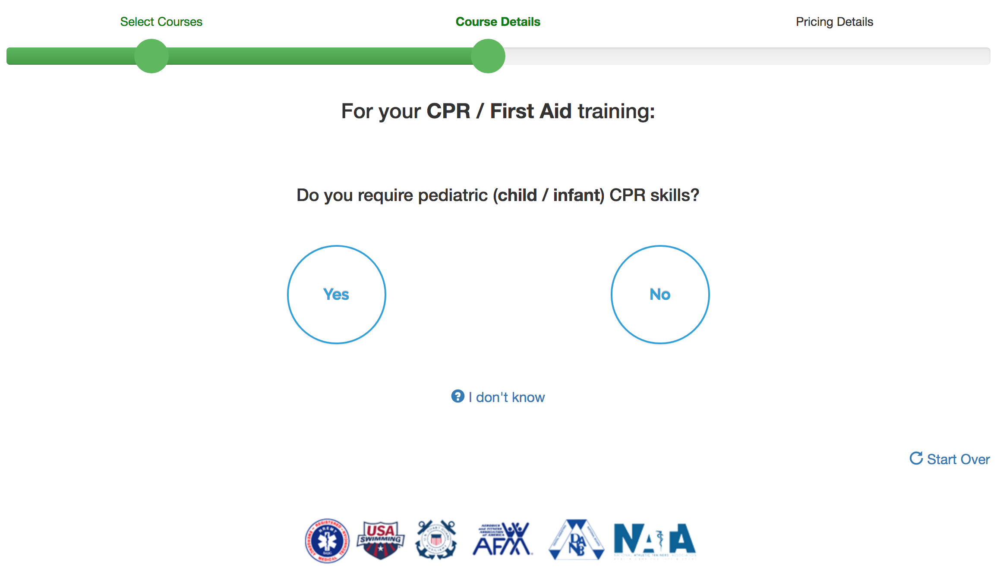

Company Self-Setup Process
- The goal of the company self-setup project was to allow companies interested in a group quote to quickly (but accurately) choose the courses they are interested in and receive a quote, based on the number of employees they have, without having to talk to a sales rep.
- This was a team project involving marketing, UX, and all 4 members of the programming team.
- I was the project manager, mentor, and main contributor in this project.
- A big consideration was the number of choices required (to ensure the correct variation of each course was chosen, whether a skills evaluation / equipment was needed, etc.) vs. quickly getting to a buying decision.
- Also of concern was showing a price without much marketing of the product, so we chose to sprinkle in trust-building items along the way.
- To receive the PDF quote (with additional custom information based on the choices made) at the end, some personal information was required.
- Finally, the process needed to transition seamlessly into a full company dashboard once the customer purchased, which required a bit of work to streamline that experience.
- The project was completed during a 3-week team getaway to Rome, Italy.
